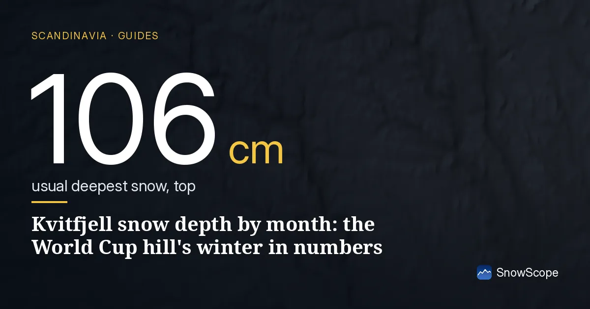

Kvitfjell snow depth by month: the World Cup hill's winter in numbers
Kvitfjell was built for Olympic racing and still hosts World Cup speed events each winter, so the mountain's snow rhythm matters. The hill rises from 184 m to 1038 m across 38 km of runs served by 14 lifts. Over 46 past winters, the pattern is clear: late autumn is thin, January through March is race-ready, and the top keeps skiing into May.
See the live snow forecast for Kvitfjell in the SnowScope appSnow depth, powder alerts and the 3D map, free.

November to December: waiting for real snow
Early season is a question of patience. November at the base sits at 19 cm in a usual year, with nine of ten Novembers seeing less than 45 cm. Mid-mountain fares slightly better at 22 cm, but the cover is still patchy.
December changes the picture. The base reaches 47 cm, mid-mountain 51 cm, and the top 55 cm in a typical year. This is when the race infrastructure takes shape and the early skiers find skiable ground, especially on the upper runs where the first proper base begins to settle.
January through March: the core winter
These three months are when Kvitfjell becomes reliably deep. January holds 72 cm at the base, 75 cm at mid-mountain, and 78 cm at the top. February deepens to 80, 82, and 86 cm. March peaks at 80, 84, and 90 cm across the same three heights.
The race calendar sits squarely in this window for good reason. ISO week 11 (early March) at mid-mountain arrives with a median 85 cm and has never dipped below 50 cm in any past winter. At the top, ISO week 12 (late March) is equally reliable, with a typical depth of 93 cm. Mid-mountain holds 50 cm or more for 11 weeks in nine of ten winters; the top keeps that threshold for 15 weeks.
Why the base stays white longer than other Norwegian hills
Most ski areas see the lower runs thin first as the sun climbs in spring. Kvitfjell defies that pattern. The base's typical peak of 95 cm nearly matches mid-mountain's 97 cm, and both lag only slightly behind the top's 106 cm. The valley floor sits in a cold pocket of the Gudbrandsdalen, so the exposed lower runs hold their snow cover long after thaws begin on sunnier slopes elsewhere.
This consistency from base to summit makes Kvitfjell unusual among Nordic resorts and explains its appeal for a long-season race calendar. The whole mountain develops together and retreats together.
April and May: the spring tail
April remains skiable on the upper slopes. Mid-mountain sits at 74 cm in a usual year, the top at 86 cm. Nine of ten Aprils see at least 39 cm at mid-mountain and 54 cm at the top, so Easter holidays often find good cover.
By May the snow has retreated to the summit zone. Mid-mountain drops to 23 cm in a usual year. The last natural snow leaves mid-mountain by May 22 in half of the winters, though the top retains patches through the month. Last snow at the summit can arrive as late as May 28 in half of the winters.
Winter to winter: the spread and the trend
Kvitfjell's winters vary, but within a narrow band. At mid-mountain, the peak has ranged from 66 cm in the leanest winter on record to 136 cm in the richest, centered on 97 cm. At the top, that spread runs from 69 to 137 cm around a median of 106 cm. These swings matter for race scheduling and for decisions about which slopes hold skiable snow.
Comparing the first half of the 46-winter record with the second half shows a small shift downward. The top's median peak dropped from 106 cm to 97 cm. Mid-mountain went from 102 to 95 cm. Snow days at mid-mountain fell from 212 to 194 per season. Last winter (2025–26) peaked at 80 cm at mid-mountain and 80 cm at the top—below the long-term median but not exceptional.
Planning a visit: which weeks give you the best odds
If you can choose, book late February or any week in March. These weeks align with the deepest snow and the most reliable conditions across all three elevations. The variance is smallest and the chance of cancellation lowest.
December and early January are riskier. The natural cover is building, and the lower runs rely on snowmaking. April works for a spring trip if you aim for mid-month or book the top half of the mountain. May is a gamble except at the summit and after fresh snow.
Tips for skiers
- Late February through March gives the highest probability of good natural snow across the whole mountain; book these weeks if your schedule allows.
- The base (184 m) and mid-mountain (611 m) have nearly equal typical depths—unusual for Norway—so spring thaws affect the lower runs less than at competing resorts.
- December to mid-January skiing depends partly on snowmaking on the lower runs; the natural cover is thicker on the top half.
- These depths describe what the area has seen over 46 past winters and what to expect on average; they are not measurements from the resort itself or guarantees for any single season.
- For avalanche risk on off-piste terrain, consult the official Varsom bulletin from NVE.
About these numbers
Resort snow depths are the deepest snow on the resort's upper slopes on the date shown; they are estimates for an area, not a measurement at one point. Forecasts can change. Always read the official avalanche bulletin before going off-piste.
Official avalanche bulletins: Varsom (NVE)
Cite this report
For research, teaching or the press: the numbers and charts are free to reuse under CC BY 4.0 with this citation.
SnowScope (2026), Kvitfjell snow depth by month: the World Cup hill's winter in numbers, https://snowscope.app/blog/en/2026/11/kvitfjell-snow-depth-world-cup-hill-by-month.html, accessed 2026-11-22
SnowScope (Atlas Labs). (2026, November 22). Kvitfjell snow depth by month: the World Cup hill's winter in numbers. SnowScope snow reports. https://snowscope.app/blog/en/2026/11/kvitfjell-snow-depth-world-cup-hill-by-month.html
BibTeX
@misc{snowscope2026kvitfjellsnowdepthworldc,
author = {{SnowScope (Atlas Labs)}},
title = {Kvitfjell snow depth by month: the World Cup hill's winter in numbers},
year = {2026},
month = nov,
howpublished = {\url{https://snowscope.app/blog/en/2026/11/kvitfjell-snow-depth-world-cup-hill-by-month.html}},
note = {Published 2026-11-22 11:12 UTC; accessed 2026-11-22}
}· CC BY 4.0 · Methods, data and tools →
Kvitfjell: snow and temperature by height, this winter vs last (tools) →
Follow Kvitfjell
Free: a message when fresh snow is coming, and the forecast every morning.
More snow reports

Røros sits at 630 m on a mountain plateau. On 13 November, 11 cm lay measured at the weather station—thin but real winter snow for the sled-dog season.

Kiruna town has 0 cm of snow on 13 November. Dog-sledding operators work around thin early-season snow. What to know about tours and local rules.

Helsinki has no snow on 14 November, but plenty of dog parks and forests. Snow usually arrives around 20 November.